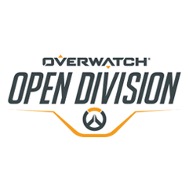
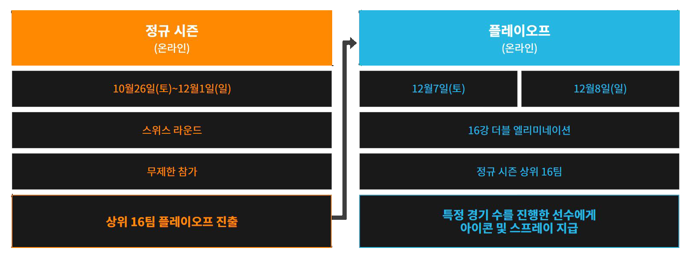

오픈 디비전 (Open Division)

블리자드 엔터테인먼트에서 주최하는 대회
오버워치 프로게이머 양성을 위한 대회로 모든 유저가 제한없이 참가할 수 있으며,
대회의 상위 네팀은 오버워치 컨텐더스 트라이얼 출전 권한이 주어집니다.
대회 목록
오버워치 오픈 디비전 코리아 - 대한민국
오버워치 오픈 디비전 - 호주&뉴질랜드
오버워치 오픈 디비전 - 유럽
오버워치 오픈 디비전 - 북미
오버워치 오픈 디비전 - 남미
오버워치 오픈 디비전 - 차이나
오버워치 오픈 디비전 - 퍼시픽
진행 방식

모든 참가 팀들은 정규 시즌 5주에 걸쳐 10경기의 5판 3선승 스위스 라운드를 진행합니다.
이후 상위 16팀이 플레이오프에 진출하여 더블 엘리미네이션 토너먼트를 진행합니다.
*스위스 라운드 : 무작위 매칭으로 1경기를 치룬 뒤, 이후 승수와 패수가 같은 팀끼리 랜덤으로 만나 상대하는 방식
*더블 엘리미네이션 토너먼트 : 첫 경기 결과에 따라 승자조, 패자조로 나뉘어서 승자조는 승자조끼리 패자조는 패자조끼리 각자 토너먼트를 펼친다.
승자조는 승자조 1위가 나올 때까지 토너먼트를 치른다.
여기에서 진 팀은 패자조로 내려가 패자조 생존팀들과 맞붙게 된다.
<오픈 디비전 코리아 방송 주소>